용접기능사 (2015-07-19 기출문제)
1과목: 용접일반
1. 다음 중 텅스텐과 몰리브덴 재료 등을 용접하기에 가장 적합한 용접은?
- 전자 빔 용접
- 일렉트로 슬래그 용접
- 탄산가스 아크 용접
- 서브머지드 아크 용접
(정답률: 51%)

2. 서브머지드 아크 용접시, 받침쇠를 사용하지 않을 경우 루트 간격을 몇 mm 이하로 하여야 하는가?
- 0.2
- 0.4
- 0.6
- 0.8
(정답률: 55%)
3. 연납땜 중 내열성 땜납으로 주로 구리, 황동용에 사용되는 것은?
- 인동납
- 황동납
- 납-은납
- 은납
(정답률: 51%)
4. 용접부 검사법 중 기계적 시험법이 아닌 것은?
- 굽힘 시험
- 경도 시험
- 인장 시험
- 부식 시험
(정답률: 87%)
5. 일렉트로 가스 아크 용접의 특징 설명 중 틀린 것은?
- 판두께에 관계없이 단층으로 상진 용접한다.
- 판두께가 얇을수록 경제적이다.
- 용접속도는 자동으로 조절된다.
- 정확한 조립이 요구되며, 이동용 냉각 동판에 급수 장치가 필요하다.
(정답률: 64%)
6. 텅스텐 전극봉 중에서 전자 방사능력이 현저하게 뛰어난 장점이 있으며 불순물이 부착되어도 전자 방사가 잘되는 전극은?
- 순텅스텐 전극
- 토륨 텅스텐 전극
- 지르코늄 텅스텐 전극
- 마그네슘 텅스텐 전극
(정답률: 63%)
7. 다음 중 표면 피복 용접을 올바르게 설명한 것은?
- 연강과 고장력강의 맞대기 용접을 말한다.
- 연강과 스테인리스강의 맞대기 용접을 말한다.
- 금속 표면에 다른 종류의 금속을 용착시키는 것을 말한다.
- 스테인리스 강판과 연강판재를 접합시 스테인리스 강판에 구멍을 뚫어 용접하는 것을 말한다.
(정답률: 71%)
8. 산업용 용접 로봇의 기능이 아닌 것은?
- 작업 기능
- 제어 기능
- 계측인식 기능
- 감정 기능
(정답률: 88%)
9. 불활성 가스 금속 아크 용접(MIG)의 용착효율은 얼마 정도인가?
- 58%
- 78%
- 88%
- 98%
(정답률: 68%)
10. 다음 중 일렉트로 슬래그 용접의 특징으로 틀린 것은?
- 박판용접에는 적용할 수 없다.
- 장비 설치가 복잡하며 냉각장치가 요구된다.
- 용접시간이 길고 장비가 저렴하다.
- 용접 진행 중 용접부를 직접 관찰할 수 없다.
(정답률: 69%)
11. 용접에 있어 모든 열적요인 중 가장 영향을 많이 주는 요소는?
- 용접 입열
- 용접 재료
- 주위 온도
- 용접 복사열
(정답률: 76%)
12. 사고의 원인 중 인적 사고 원인에서 선천적 원인은?
- 신체의 결함
- 무지
- 과실
- 미숙련
(정답률: 76%)
13. TIG 용접에서 직류 정극성을 사용하였을 때 용접효율을 올릴 수 있는 재료는?
- 알루미늄
- 마그네슘
- 마그네슘 주물
- 스테인리스강
(정답률: 58%)
14. 재료의 인장 시험방법으로 알 수 없는 것은?
- 인장강도
- 단면수축율
- 피로강도
- 연신율
(정답률: 54%)
15. 용접 변형 방지법의 종류에 속하지 않는 것은?
- 억제법
- 역변형법
- 도열법
- 취성 파괴법
(정답률: 63%)
16. 솔리드 와이어와 같이 단단한 와이어를 사용할 경우 적합한 용접 토치 형태로 옳은 것은?
- Y형
- 커브형
- 직선형
- 피스톨형
(정답률: 47%)
17. 안전·보건표지의 색채, 색도기준 및 용도에서 색채에 따른 용도를 올바르게 나타낸 것은?
- 빨간색 : 안내
- 파란색 : 지시
- 녹색 : 경고
- 노란색 : 금지
(정답률: 84%)
18. 용접금속의 구조상의 결함이 아닌 것은?
- 변형
- 기공
- 언더컷
- 균열
(정답률: 62%)
19. 금속재료의 미세조직을 금속현미경을 사용하여 광학적으로 관찰하고 분석하는 현미경시험의 진행순서로 맞는 것은?
- 시료 채취 → 연마 → 세척 및 건조 → 부식 → 현미경 관찰
- 시료 채취 → 연마 → 부식 → 세척 및 건조 → 현미경 관찰
- 시료 채취 → 세척 및 건조 → 연마 → 부식 → 현미경 관찰
- 시료 채취 → 세척 및 건조 → 부식 → 연마 → 현미경 관찰
(정답률: 61%)
20. 강판의 두께가 12mm, 폭 100mm인 평판을 V형 홈으로 맞대기 용접 이음할 때, 이음효율 η=0.8 로 하면 인장력 P는? (단, 재료의 최저인장강도는 40 N/㎣이고, 안전율은 4로 한다.)
- 960 N
- 9600 N
- 860 N
- 8600 N
(정답률: 55%)
21. 다음 중 목재, 섬유류, 종이 등에 의한 화재의 급수에 해당하는 것은?
- A급
- B급
- C급
- D급
(정답률: 75%)
22. 용접부의 시험 중 용접성 시험에 해당하지 않는 시험법은?
- 노치 취성 시험
- 열특성 시험
- 용접 연성 시험
- 용접 균열 시험
(정답률: 52%)
23. 다음 중 가스용접의 특징으로 옳은 것은?
- 아크 용접에 비해서 불꽃의 온도가 높다.
- 아크 용접에 비해 유해광선의 발생이 많다.
- 전원 설비가 없는 곳에서는 쉽게 설치할 수 없다.
- 폭발의 위험이 크고 금속이 탄화 및 산화될 가능성이 많다.
(정답률: 62%)
24. 산소-아세틸렌 용접에서 표준불꽃으로 연강판 두께 2mm를 60분간 용접하였더니 200L의 아세틸렌가스가 소비되었다면, 다음 중 가장 적당한 가변압식 팁의 번호는?
- 100번
- 200번
- 300번
- 400번
(정답률: 72%)
25. 연강용 가스 용접봉의 시험편 처리 표시 기호 중 NSR의 의미는?
- 625 ± 25℃로써 용착금속의 응력을 제거한 것
- 용착금속의 인장강도를 나타낸 것
- 용착금속의 응력을 제거하지 않은 것
- 연신율을 나타낸 것
(정답률: 60%)
26. 피복 아크 용접에서 사용하는 아크 용접용 기구가 아닌 것은?
- 용접 케이블
- 접지 클램프
- 용접 홀더
- 팁 클리너
(정답률: 79%)
27. 피복아크 용접봉의 피복제의 주된 역할로 옳은 것은?
- 스패터의 발생을 많게 한다.
- 용착 금속에 필요한 합금원소를 제거한다.
- 모재 표면에 산화물이 생기게 한다.
- 용착 금속의 냉각속도를 느리게 하여 급랭을 방지한다.
(정답률: 75%)
28. 용접의 특징에 대한 설명으로 옳은 것은?
- 복잡한 구조물 제작이 어렵다.
- 기밀, 수밀, 유밀성이 나쁘다.
- 변형의 우려가 없어 시공이 용이하다.
- 용접사의 기량에 따라 용접부의 품질이 좌우된다.
(정답률: 77%)
29. 가스 절단에서 팁(Tip)의 백심 끝과 강판 사이의 간격으로 가장 적당한 것은?
- 0.1 ~ 0.3 mm
- 0.4 ~ 1 mm
- 1.5 ~ 2 mm
- 4 ~ 5 mm
(정답률: 62%)
30. 스카핑 작업에서 냉간재의 스카핑 속도로 가장 적합한 것은?
- 1 ~ 3 m/min
- 5 ~ 7 m/min
- 10 ~ 15 m/min
- 20 ~ 25 m/min
(정답률: 60%)
31. AW-300, 무부하 전압 80V, 아크 전압 20V인 교류용접기를 사용할 때, 다음 중 역률과 효율을 올바르게 계산한 것은? (단, 내부손실을 4kW라 한다.)
- 역률 : 80.0%, 효율 : 20.6%
- 역률 : 20.6%, 효율 : 80.8%
- 역률 : 60.0%, 효율 : 41.7%
- 역률 : 41.7%, 효율 : 60.6%
(정답률: 46%)
32. 가스 용접에서 후진법에 대한 설명으로 틀린 것은?
- 전진법에 비해 용접변형이 작고 용접속도가 빠르다.
- 전진법에 비해 두꺼운 판의 용접에 적합하다.
- 전진법에 비해 열 이용율이 좋다.
- 전진법에 비해 산화의 정도가 심하고 용착금속 조직이 거칠다.
(정답률: 58%)
33. 피복아크용접에 관한 사항으로 아래 그림의 ( )에 들어가야 할 용어는?
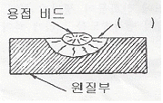
- 용락부
- 용융지
- 용입부
- 열영향부
(정답률: 58%)
34. 용접봉에서 모재로 용융금속이 옮겨가는 이행형식이 아닌 것은?
- 단락형
- 글로뷸러형
- 스프레이형
- 철심형
(정답률: 63%)
35. 직류 아크용접에서 용접봉의 용융이 늦고, 모재의 용입이 깊어지는 극성은?
- 직류 정극성
- 직류 역극성
- 용극성
- 비용극성
(정답률: 66%)
2과목: 용접재료
36. 아세틸렌 가스의 성질로 틀린 것은?
- 순수한 아세틸렌 가스는 무색무취이다.
- 금, 백금, 수은 등을 포함한 모든 원소와 화합시 산화물을 만든다.
- 각종 액체에 잘 용해되며, 물에는 1배, 알코올에는 6배 용해된다.
- 산소와 적당히 혼합하여 연소시키면 높은 열을 발생한다.
(정답률: 55%)
37. 아크 용접기에서 부하전류가 증가하여도 단자전압이 거의 일정하게 되는 특성은?
- 절연특성
- 수하특성
- 정전압특성
- 보존특성
(정답률: 64%)
38. 피복제 중에 산화티탄올 약 35% 정도 포함하였고 슬래그의 박리성이 좋아 비드의 표면이 고우며 작업성이 우수한 특징을 지닌 연강용 피복 아크 용접봉은?
- E4301
- E4311
- E4313
- E4316
(정답률: 67%)
39. 상율(Phase Rule)과 무관한 인자는?
- 자유도
- 원소 종류
- 상의 수
- 성분 수
(정답률: 48%)
40. 공석조성을 0.80%C라고 하면, 0.2%C 강의 상온에서의 초석페라이트와 펄라이트의 비는 약 몇 % 인가?
- 초석페라이드 75% : 펄라이트 25%
- 초석페라이드 25% : 펄라이트 75%
- 초석페라이드 80% : 펄라이트 20%
- 초석페라이드 20% : 펄라이트 80%
(정답률: 42%)
41. 금속의 물리적 성질에서 자성에 관한 설명 중 틀린 것은?
- 연철(鍊鐵)은 잔류자기는 작으나 보자력이 크다.
- 영구자석재료는 쉽게 자기를 소실하지 않는 것이 좋다.
- 금속을 자석에 접근시킬 때 금속에 자석의 극과 반대의 극이 생기는 금속을 상자성체라 한다.
- 자기장의 강도가 증가하면 자화되는 강도도 증가하나 어느 정도 진행되면 포화점에 이르는 이 점을 퀴리점이라 한다.
(정답률: 46%)
42. 다음 중 탄소강의 표준 조직이 아닌 것은?
- 페라이트
- 펄라이트
- 시멘타이트
- 마텐자이트
(정답률: 55%)
43. 주요성분이 Ni-Fe 합금인 불변강의 종류가 아닌 것은?
- 인바
- 모넬메탈
- 엘린바
- 플래티나이트
(정답률: 49%)
44. 탄소강 중에 함유된 규소의 일반적인 영향 중 틀린 것은?
- 경도의 상승
- 연신율의 감소
- 용접성의 저하
- 충격값의 증가
(정답률: 43%)
45. 다음 중 이온화 경향이 가장 큰 것은?
- Cr
- K
- Sn
- H
(정답률: 47%)
46. 실온까지 온도를 내려 다른 형상으로 변형시켰다가 다시 온도를 상승시키면 어느 일정한 온도 이상에서 원래의 형상으로 변화하는 합금은?
- 제진합금
- 방진합금
- 비정질합금
- 형상기억합금
(정답률: 82%)
47. 금속에 대한 설명으로 틀린 것은?
- 리튬(Li)은 물보다 가볍다.
- 고체 상태에서 결정구조를 가진다.
- 텅스텐(W)은 이리듐(Ir)보다 비중이 크다.
- 일반적으로 용융점이 높은 금속은 비중도 큰 편이다.
(정답률: 53%)
48. 고강도 Al 합금으로 조성이 Al-Cu-Mg-Mn 인 합금은?
- 라우탈
- Y-합금
- 두랄루민
- 하이드로날륨
(정답률: 62%)
49. 7:3 황동에 1% 내외의 Sn을 첨가하여 열교환기, 증발기 등에 사용되는 합금은?
- 코슨 황동
- 네이벌 황동
- 애드미럴티 황동
- 에버듀어 메탈
(정답률: 49%)
50. 구리에 5~20%Zn을 첨가한 황동으로, 강도는 낮으나 전연성이 좋고 색깔이 금색에 가까워, 모조금이나 판 및 선 등에 사용되는 것은?
- 톰백
- 켈밋
- 포금
- 문쯔메탈
(정답률: 56%)
3과목: 기계제도
51. 열간 성형 리벳의 종류별 호칭길이(L)를 표시한 것 중 잘못 표시된 것은?
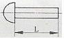
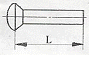
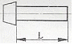
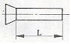
(정답률: 54%)
52. 다음 중 배관용 탄소 강관의 재질기호는?
- SPA
- STK
- SPP
- STS
(정답률: 51%)
53. 그림과 같은 KS 용접 보조기호의 설명으로 옳은 것은?
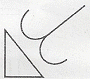
- 필릿 용접부 토우를 매끄럽게 함
- 필릿 용접 끝단부를 볼록하게 다듬질
- 필릿 용접 끝단부에 영구적인 덮개 판을 사용
- 필릿 용접 중앙부에 제거 가능한 덮개 판을 사용
(정답률: 64%)
54. 그림과 같은 경 ㄷ 형강의 치수 기입 방법으로 옳은 것은? (단, L은 형강의 길이를 나타낸다.)
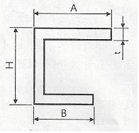
- ㄷ A×B×H×t - L
- ㄷ H×A×B×t - L
- ㄷ B×A×H×t - L
- ㄷ H×B×A×L - t
(정답률: 54%)
55. 도면에서 반드시 표제란에 기입해야 하는 항목으로 틀린 것은?
- 재질
- 척도
- 투상법
- 도명
(정답률: 62%)
56. 선의 종류와 명칭이 잘못된 것은?
- 가는 실선 - 해칭선
- 굵은 실선 - 숨은선
- 가는 2점 쇄선 - 가상선
- 가는 1점 쇄선 - 피치선
(정답률: 67%)
57. 그림과 같은 입체도에서 화살표 방향을 정면으로 할 때 평면도로 가장 적합한 것은?
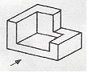
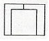
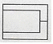
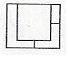
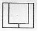
(정답률: 73%)
58. 도면의 밸브 표시방법에서 안전밸브에 해당하는 것은?
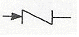
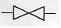
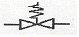
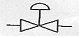
(정답률: 63%)
59. 제 1각법과 제 3각법에 대한 설명 중 틀린 것은?
- 제 3각법은 평면도를 정면도의 위에 그린다.
- 제 1각법은 저면도를 정면도의 아래에 그린다.
- 제 3각법의 원리는 눈 → 투상면 → 물체의 순서가 된다.
- 제 1각법에서 우측면도는 정면도를 기준으로 본 위치와는 반대쪽인 좌측에 그려진다.
(정답률: 52%)
60. 일반적으로 치수선을 표시할 때, 치수선 양 끝에 치수가 끝나는 부분임을 나타내는 형상으로 사용하는 것이 아닌 것은?
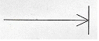
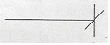
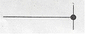
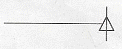
(정답률: 57%)